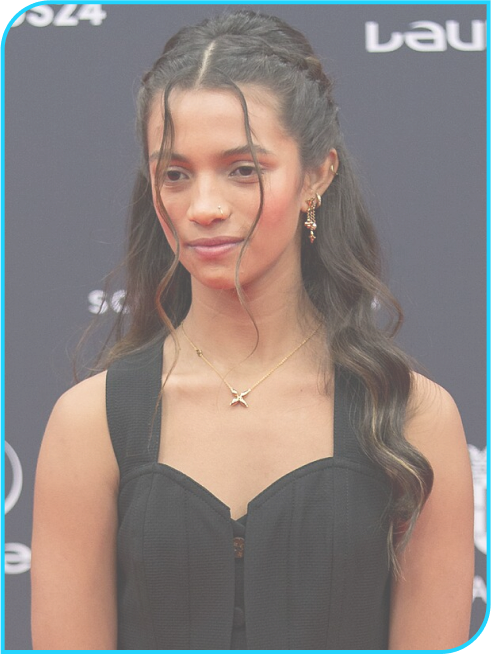

Rayssa Leal
Popularmente chamada de “Fadinha do Skate”, Rayssa ganhou esse apelido após seu vídeo fazendo manobras de skate fantasiada de fada viralizar na internet aos sete anos de idade. Desde então, ela se tornou conhecida na cena do skate brasileira e nas redes sociais. Seu sucesso nas competições fez dela uma atleta reconhecida no skate mundial.
